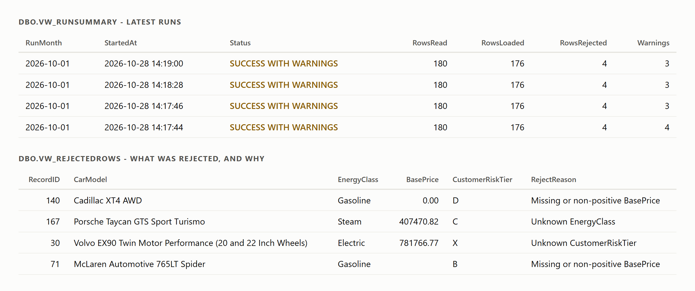
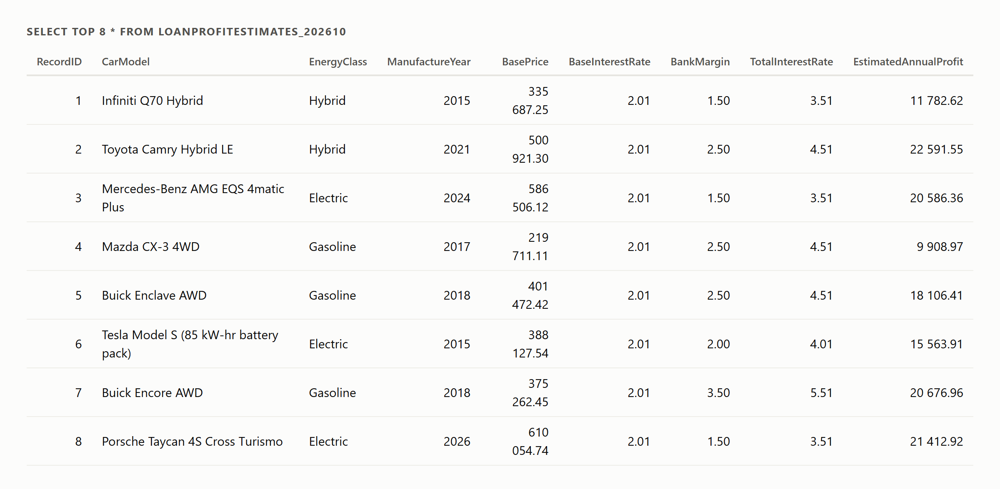
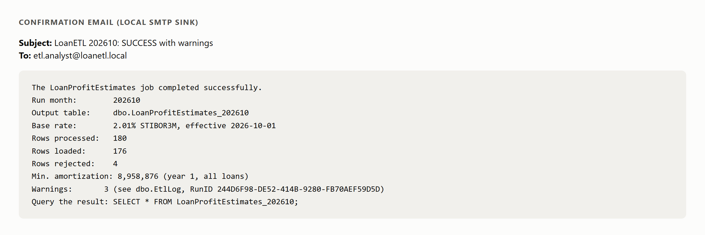
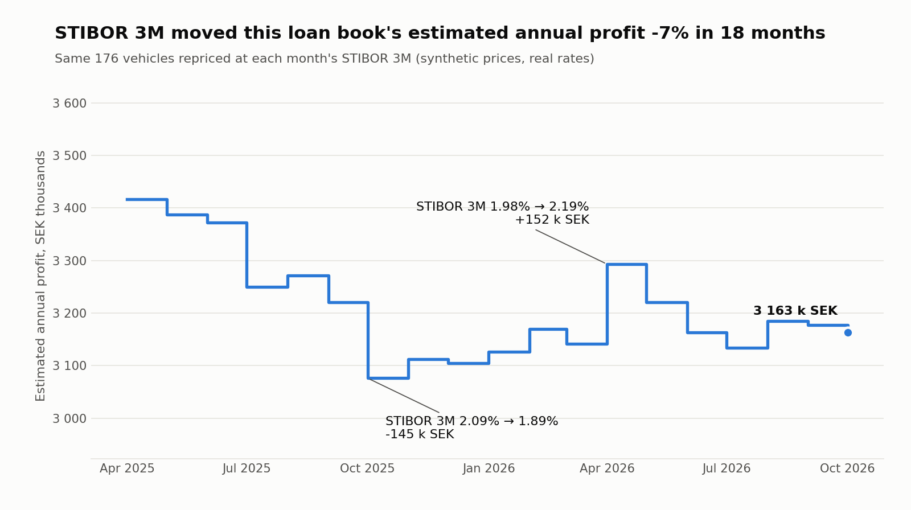

A monthly SQL Server pipeline: ingest, validate, price, log, confirm.
A bank receives a vehicle file from an agency each month. Estimated profit per car depends on three things:
annual profit = price × (STIBOR 3M + energy margin + risk adjustment) / 100
Plus: logging, a confirmation mail with row counts, and a schedule.
Dynamic table names for the month, built with QUOTENAME and parameterised sp_executesql.
| Data | Source | Real? |
|---|---|---|
| Base interest rate | STIBOR 3M from SFBF (non-commercial education licence): the fixing on the last day of the previous month | Real |
| Models, years, fuel types | fueleconomy.gov vehicles.csv, mapped to Electric / Hybrid / Gasoline / Diesel | Real |
| Prices, customer risk tiers | Generated with a fixed random seed, so every run is reproducible | Synthetic |
| Bank margins | Energy margins from the brief: 1.0 / 1.5 / 2.5 %. Risk adjustments and depreciation rates are my assumptions | Given / assumed |
Each monthly file deliberately contains messy rows: padded and lower-case classes, a missing price, a zero price, an unknown tier, an unknown energy class.
| Decision | Why |
|---|---|
| Text staging | A bad value in the file can never fail the load. It is cleaned or rejected with a reason. |
| Rate fallback, logged | No rate for the month: use the latest earlier one, and say which. No rate at all: hard stop. |
| Transactional rebuild | The analyst never sees half a table; a failed run leaves last month's result intact. |
| Mail outside the main try/catch | A broken mail server is a warning, not a failed run. |
| Failures re-thrown | SQL Agent history shows the job as failed when it is. |
| Re-runnable scripts | Every script and run is idempotent. Tested. |


Every vehicle carries the base rate, its margin (energy class + credit risk), the total rate and the estimated annual profit, plus its depreciation and minimum amortization.

Captured by a local SMTP sink during development, so nothing left the machine.

A view on top of the pipeline's own tables and formula. Real rates, synthetic prices. Annual figures, year 1.
| Scenario | What it proves |
|---|---|
| Rate present / missing | Normal run; exact fallback warning with month and value |
| Formula, risk margin, depreciation, normalisation | Profit matches the formula to the öre; risk tier adds to the margin; depreciation adds up; " electric " becomes Electric |
| Rejects | Five bad rows, one per rule, rejected with the right reasons |
| Re-run, missing file, mail failure | No duplicates; loud failure with nothing created; warning, not failure |
The SQL Agent job succeeded on its first manual start, and is scheduled for the 1st of each month.
Started as an ETL assignment on the Data Engineer programme at Nackademin. The data layer, quality views, tests and CI are my additions.